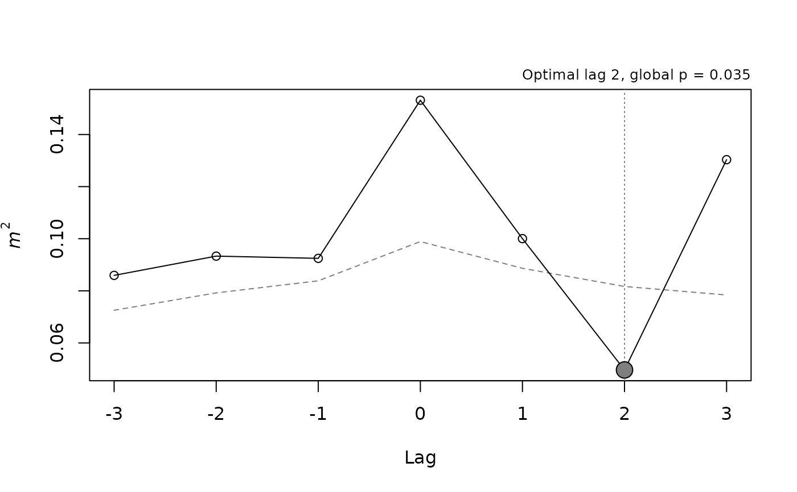

Runs lagged_protest() on pairs of data sets from a named list, such as
the modules of a multi-trait study measured on the same time points, and
collects the results in one table.
Usage
lagged_protest_pairs(
data,
pairs = NULL,
lags = 0:6,
bidirectional = TRUE,
p.adjust.method = "BH",
seed = NULL,
...
)Arguments
- data
A named list of numeric matrices, data frames or
distobjects, all with the same number of rows (time points).- pairs
Pairs to analyze:
NULL(default) for all unordered pairs, or a list of character vectors of length 2, or a two-column character matrix, giving names ofdata. The first element of each pair is passed asX.- lags, bidirectional
Passed to
lagged_protest().bidirectionaldefaults toTRUEhere.- p.adjust.method
Correction of the global p-values across pairs, any method of
stats::p.adjust(). Defaults to"BH".- seed
Passed to
lagged_protest()for every pair.- ...
Further arguments passed to
lagged_protest(), such aspermutation,npermorperiod.
Value
A data frame with one row per pair and columns x, y,
optimal_lag, n (rows at the optimal lag), m2, r, p.value (raw
p at the optimal lag), p.global and p.global.adjusted (adjusted
across pairs). The lagged_protest() fits are stored, named
"x -> y", in the attribute "fits".
Details
By default every unordered pair is analyzed once with
bidirectional = TRUE, so both directions are covered by the sign of the
lag: a positive optimal lag means that the first data set of the pair
(x) leads the second (y), and a negative one that y leads x. The
global p-values of the pairs are then adjusted for the number of pairs
with p.adjust.method, because the max-statistic test accounts for the
lags scanned within a pair but not for the pairs examined.
Every pair uses the same seed, so results do not depend on the order or
number of pairs.
Examples
sim <- simulate_lagged_series(n_times = 12, true_lag = 2, noise_sd = 0.3,
seed = 1)
blocks <- list(A = sim$X, B = sim$Y,
C = simulate_lagged_series(n_times = 12, seed = 2)$X)
res <- lagged_protest_pairs(blocks, lags = 0:3, nperm = 199, seed = 1)
res
#> x y optimal_lag n m2 r p.value p.global p.global.adjusted
#> 1 A B 2 10 0.04963006 0.9748692 0.005 0.010 0.0300
#> 2 A C 3 9 0.21583858 0.8855289 0.095 0.275 0.2750
#> 3 B C 1 11 0.20289455 0.8928076 0.010 0.145 0.2175
plot(attr(res, "fits")[["A -> B"]])
